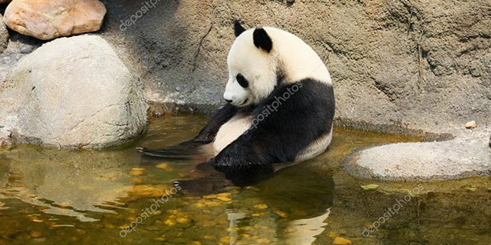

What I eat ?
I like bambooooooooo
A panda's daily diet consists almost entirely of the leaves, stems and shoots of various bamboo species. Bamboo contains very little nutritional value so pandas must eat 12-38kg every day to meet their energy needs. But they do branch out, with about 1% of their diet comprising other plants and even meat. While they are almost entirely vegetarian, pandas will sometimes hunt for pikas and other small rodents. Indeed, as members of the bear family, giant pandas possess the digestive system of a carnivore, although they have evolved to depend almost entirely on bamboo. This reliance on bamboo leaves them vulnerable to any loss of their habitat – currently the major threat to their survival.
Learn more about me (& take me bamboo please) ⟶
The Sport
It's for the future
The panda don't have a really sports activities, but me i want a summer body
You can't learn more about my performance it's so tiresome ⟶

I don't really like water
No i'm joking !
I use water a lot just like humans do. Giant pandas diet is bamboo but of course there is water in bamboo. So just like humans they use water to eat and drink. Giant pandas need more water to survive then what bamboo provides. To drink they tons of water from fresh water in near streams and rivers.
Learn more about my magic life ⟶